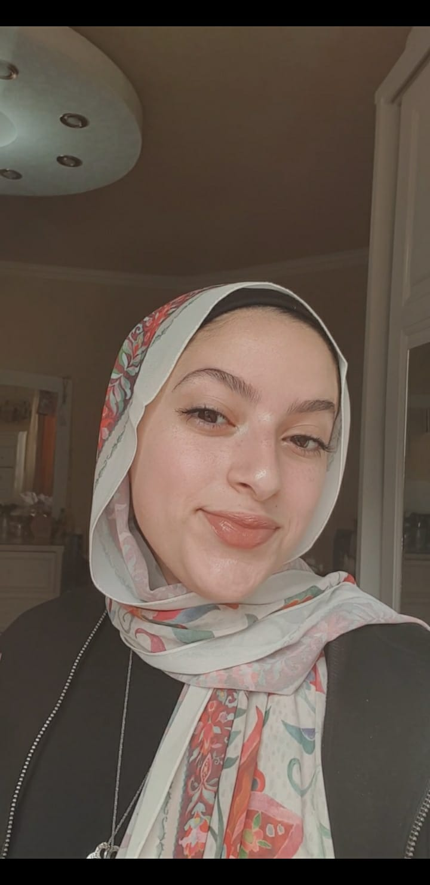

About Me
I am Judy Youssef, a Digital media student at Coventry University. I really enjoy painting and videography. I find it fascinating how a couple of strokes on a canvas or a couple of shots could create a story that everyone perceives uniquely. Exploring new places and capturing their memories is a major satisfaction to my heart. I joined an internship at iSpark in 2021, where I learned more about sales, marketing, and event organisation.
Filmmaking and animation are what I mostly see myself doing when it comes to working in the Digital media industry. I look forward to enhancing my work every day and exploring what my lens and brush could do.